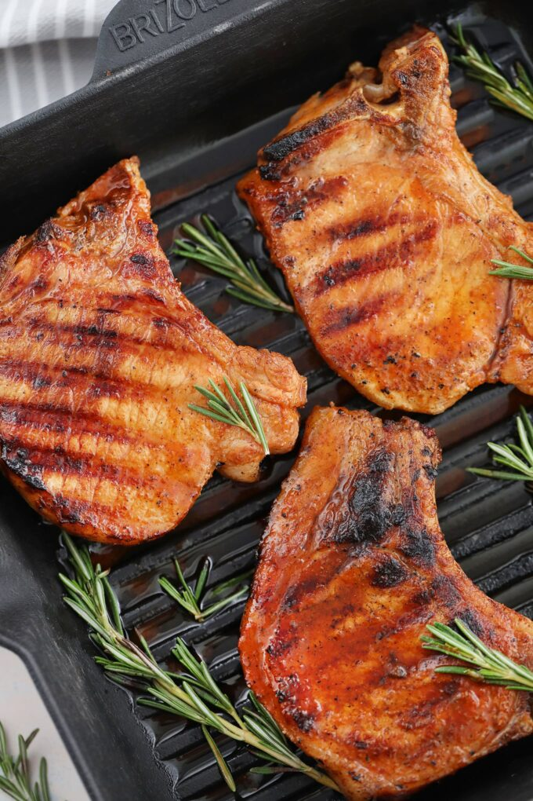

Easy Grilled Pork Chops

Description
A smart choice? Brine your pork chops before throwing them on the hot grill! They'll stay so juicy and
tender. We'll show you how.
Ingredients
- 4 1/2 cups pork chop brine
- 4 bone-in pork rib chops, each about 2 inches thick
- 1 1/2 teaspoons Morton's kosher salt
- 1 teaspoon ground cumin
- 1/2 teaspoon freshly ground black pepper
- 1/4 teaspoon sweet paprika
- Pinch of cayenne pepper (optional)
- 1 tablespoon vegetable oil, plus more for grill
Steps
- Brine the pork chops:
- In a large pot or bowl, add the cooled brine and the pork chops, making sure all of them are fully submerged in the brine. You can place a heavy plate on top to help them stay submerged. Cover and refrigerate for 1 hour.
- Remove the pork chops from the brine. Rinse them under cold running water, then pat them dry with paper towels. Lay the pork chops on a platter so that they come to room temperature while the grill heats.
- Heat the grill:
- Use a grill brush to clean the grill grates. Saturate a wad of paper towel generously with vegetable oil and rub it along the grates. If using a gas grill, heat one side to 400°F or high and keep the burners off on the other side. If using a charcoal grill, spread the hot coals on one half of the grill and leave the other half empty.
- Season with the spice rub:
- In a small bowl, combine the salt, cumin, black pepper, paprika, and cayenne pepper, if using. Use your hands to rub both sides of the pork chops with the oil. Sprinkle and massage the spice rub all over them.
- Grill the pork chops:
- When the grill reaches 400°F, place the pork chops on the hot side of the grill and press down firmly with a grill spatula. Sear for 4 minutes without moving them. This allows the meat to caramelize properly. Flip them over and sear for 4 minutes without moving them.
- Move the seared pork chops to the cool side of the grill, then close the lid. Cook for 15 to 20 minutes, or until a meat thermometer inserted in the center of the pork chop registers 145°F.
- Allow the pork chops to rest:
- Transfer the grilled pork chops onto a platter and cover it loosely with foil. Rest them for 5 minutes before serving, which will allow the juices to settle down.